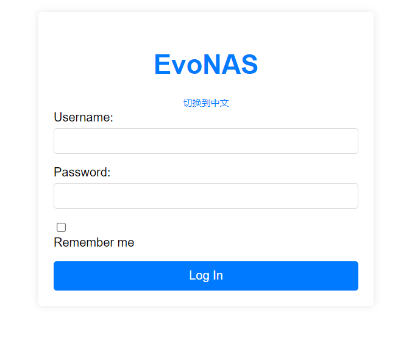
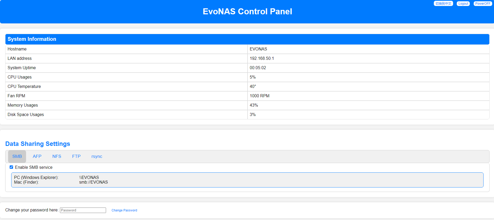

EvoNAS - An Affordable Network Attached Storage Solution
EvoNAS is built on the robust foundation of DebianOS and is designed to provide seamless, secure,
and cost-effective data storage solutions. This family NAS system is developed to offer reliable NAS functionality
at an affordable price.

EvoNAS Login Page
Key Features
Interface: EvoNAS includes an intuitive web-based control panel, where users can easily manage system settings,
view real-time performance metrics, and monitor network activity.
Comprehensive Data Sharing Services: EvoNAS supports multiple data-sharing protocols, making
it compatible with a wide variety of operating systems and devices, ensuring easy integration in mixed environments.
Advanced Security: The platform provides essential features such as password and username management to ensure that data is securely
accessible. The login page is fortified with a clean design, responsive layout, and the ability to switch languages between English and Chinese.
Debian-Based Stability: Built on Debian OS, EvoNAS inherits the stability and security of the underlying Linux system, ensuring that
your data is always safe and the system runs smoothly.
Power-Efficient Performance: Leveraging the lightweight and efficient nature of Linux, EvoNAS optimizes energy consumption without
sacrificing performance, making it a reliable and eco-friendly solution for continuous operation.

EvoNAS Control Panel
Back to Projects